Historia
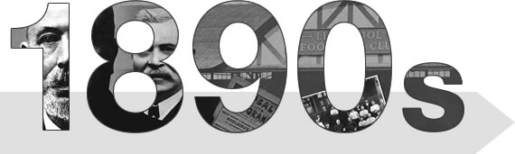
1892 Se funde el Club de Fútbol Liverpool
1892 Los Reds ganan su primer partido
1893 Primer partido en la Football League
1894 Los Reds logran el ascenso en su primer intento
1896 Los Reds consiguen una victoria récord
1896 Tom Watson asume como técnico
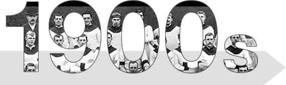
1901 Los Reds ganan su primer campeonato
1906 El título regresa a Anfield
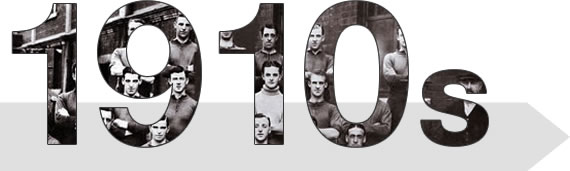
1914 Los Reds llegan a su primera final de la Copa FA
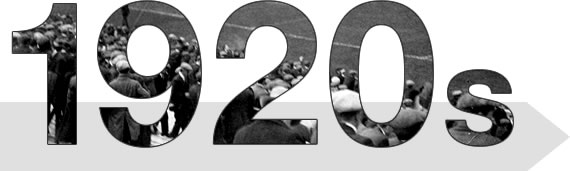
1922 Tercer título para los Reds
1923 Los Reds repiten como campeones
1928 Colocan techo al Spion Kof
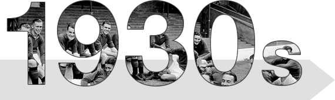
1938 Balmer anota el gol más rápido
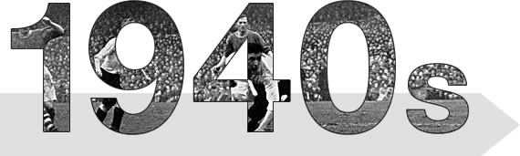
1946 Stubbins ficha por un monto récord
1946 Balmer anota dos hat tricks consecutivos
1947 Los Reds ganan el primer campeonato después de la guerra
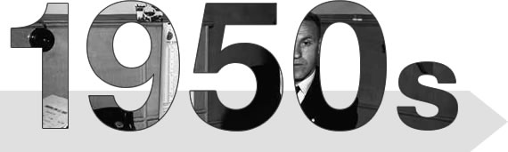
1950 Miseria para los Reds en la final de Copa
1952 Anfield establece un nuevo récord
1954 Los Reds bajan a segunda división
1954 Los Reds bajan a segunda división
1959 Humillados por el modesto Worcester
1959 Shankly llega a Anfield
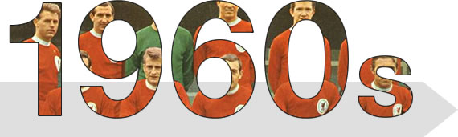
1961 Nuevamente se rompe el récord de transferencias
1962 Los Reds suben a primera división
1964 Sexto título para los Reds
1964 Los Reds comparten el Charity Shield con West Ham
1964 Primera aventura europea para los Reds
1964 Los Reds estrenan uniforme completamente rojo
1965 Tras 73 años de espera, gloria en la Copa
1965 Los Reds y United comparten la Charity Shield
1966 Victoria frente al Chelsea para ganar el título
1966 Los Reds pierden su primera final europea
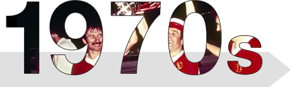
1973 Octavo título de liga para los Reds
1973 Los Reds conquistan Europa al ganar la Copa UEFA
1974 La Copa FA regresa a Anfield
1974 Paisley asume como técnico
1974 Los Reds 11 goles en un partido
1976 Los Reds ganan su noveno título en Molineaux
1976 Liverpool gana su segunda Copa UEFA
1976 Los Reds vencen a Saints para ganar la Shield
1977 Los Reds llegan a diez títulos
1978 Agonía para los Reds en la Copa de Liga
1979 Triunfo sobre Arsenal para ganar la Charity Shield
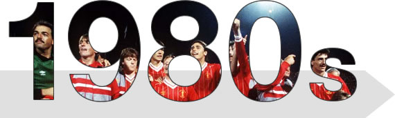
1980 Los Reds conquistan su decimosegundo título
1981 La Charity Shield regresa a Anfield
1982 Los Reds vencen a Spurs y logran el bicampeonato de la Copa de Liga
1983 Paisley obtiene la Copa de Liga con triunfo sobre Man U
1984 Paisley se despide otorgando el 14to título a los Reds
1985 Kennedy, el héroe de los penales en Roma
1986 Fagan dimite tras la tragedia de Heysel
1988 Agonía para Aldo en derrota de la final de la FA Cup
1989 Alegría para Aldo al ganar la Charity Shield
1989 Hillsborough - Nuestro día más oscuro
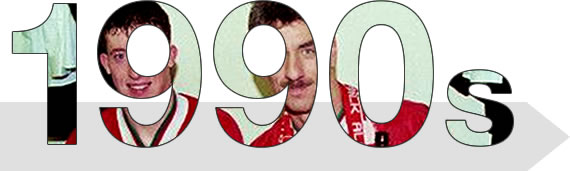
1990 Los Reds ganan su 18vo título de liga
1990 Los Reds comparten la Shield con Man United
1991 Kenny Dalglish dimite como técnico de Liverpool
1992 Thomas y Rush consiguen la quinta Copa
1992 Rush establece un nuevo récord goleador
1994 Los hinchas despiden al Kop
1995 Doblete de Macca vale una Copa de Liga
1996 Una Copa Juvenil de la mano de Owen y Carra
1997 Owen se convierte en el goleador más joven del club
1998 Houllier forma dupla técnica con Evans
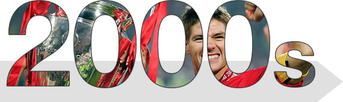
2001 Los Reds vencen al Birmingham en Cardiff
2001 Owen gana la Copa frente al Arsenal
2001 Dramático título del Liverpool en Dortmund
2003 Gerrard y Owen vencen al United en Cardiff
2004 Rafa Benitez llega a Anfield
2005 El milagro de Estambul
2005 Reds vencen al CSKA para ganar la Super Copa
2006 Gloria para los Reds en la Copa Juvenil
2006 Hazaña de los Reds en la mejor final copera de la historia
2006 Los Reds vencen al Chelsea para ganar la Community Shield
2007 Hicks y Gillett llegan a Anfield
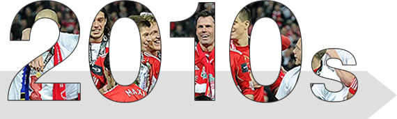
2010 Benítez deja el Liverpool
2010 Liverpool FC es vendido a NESV
2011 Se va Hodgson - regresa Dalglish
2011 Dalglish firma contrato permanente
2012 Los Reds ponen fin a la sequía de trofeos
2012 LFC termina su vínculo con Daglish
2012 Brendan Rodgers es nombrado técnico de Liverpool
2014 Dolor por el título perdido y regreso a la Champions League
2015 Los Reds terminan su vínculo con Rodgers
2015 Klopp toma las riendas en Anfield